Die Niere – Prüfungstraining Biologie (Klasse 8)

Der Druck – Prüfungstraining Physik (Klasse 8)

Das Gradnetz der Erde – Prüfungstraining Erdkunde (Klasse 8)

Die Kreuzzüge – Prüfungstraining Geschichte (Klasse 8)

Die Zähne – Prüfungstraining Biologie (Klasse 8)

Die Zelle – Prüfungstraining Biologie (Klasse 8)

Die Muskeln – Prüfungstraining Biologie (Klasse 8)

Das Skelett – Prüfungstraining Biologie (Klasse 8)

Die Atmung – Prüfungstraining Biologie (Klasse 8)

Die Verdauung – Prüfungstraining Biologie (Klasse 8)

Das Ohr – Prüfungstraining Biologie (Klasse 8)

Das Auge – Prüfungstraining Biologie (Klasse 8)
Die Verbrennung – Prüfungstraining Chemie (Klasse 8)
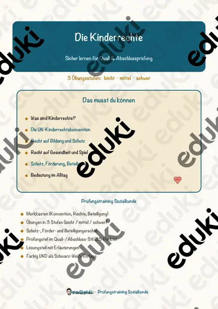
Die Kinderrechte – Prüfungstraining Sozialkunde (Klasse 8)
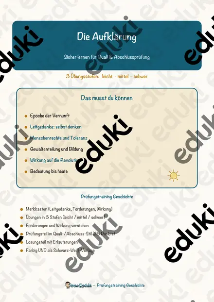
Die Aufklärung – Prüfungstraining Geschichte (Klasse 8)

Die Charakterisierung – Prüfungstraining Deutsch (Klasse 8)
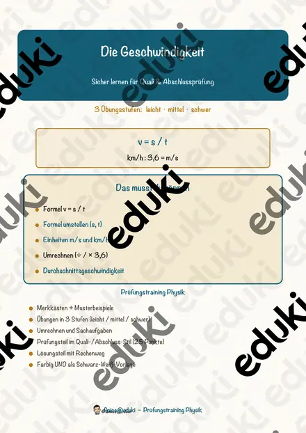
Die Geschwindigkeit – Prüfungstraining Physik (Klasse 8)
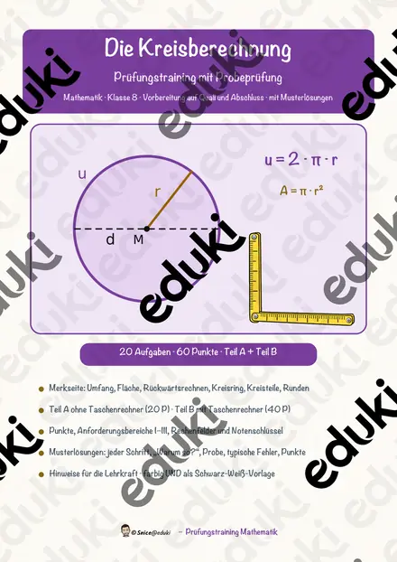
Die Kreisberechnung – Prüfungstraining Mathematik (Klasse 8)

Der Umweltschutz – Prüfungstraining Biologie (Klasse 8)

Die Ballade – Prüfungstraining Deutsch (Klasse 8)

Die Plattentektonik – Prüfungstraining Erdkunde (Klasse 8)
Der Absolutismus – Prüfungstraining Geschichte (Klasse 8)

Die Landwirtschaft – Prüfungstraining Erdkunde (Klasse 8)

Die Fabel – Prüfungstraining Deutsch (Klasse 8)
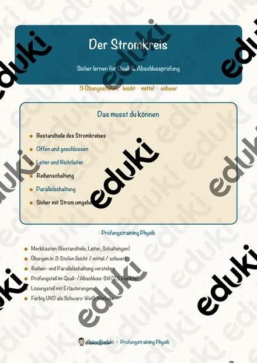
Der Stromkreis – Prüfungstraining Physik (Klasse 8)

Groß- und Kleinschreibung – Prüfungstraining Deutsch (Klasse 8)
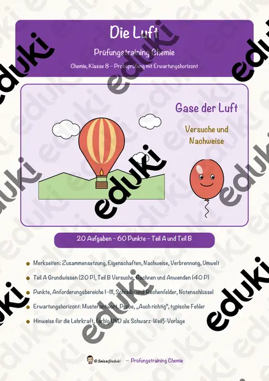
Die Luft – Prüfungstraining Chemie (Klasse 8)
Das Wasser – Prüfungstraining Chemie (Klasse 8)
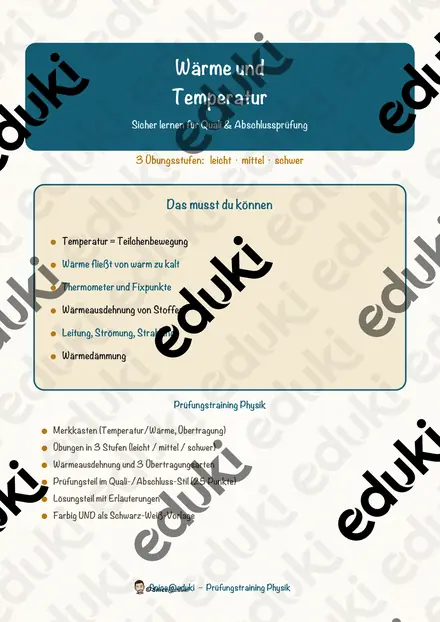
Wärme und Temperatur – Prüfungstraining Physik (Klasse 8)

Ernährung und Nährstoffe – Prüfungstraining Biologie (Klasse 8)

Die Zeitformen – Prüfungstraining Deutsch (Klasse 8)
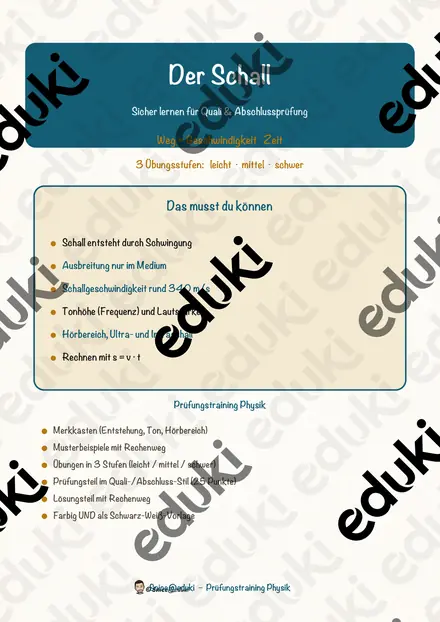
Der Schall – Prüfungstraining Physik (Klasse 8)

Die Satzglieder – Prüfungstraining Deutsch (Klasse 8)

Die Wortarten – Prüfungstraining Deutsch (Klasse 8)
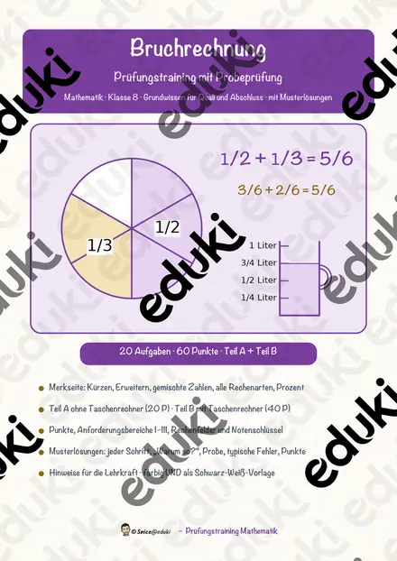
Bruchrechnung – Prüfungstraining Mathematik (Klasse 8)
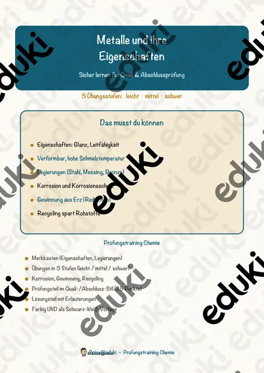
Metalle und ihre Eigenschaften – Prüfungstraining Chemie (Klasse 8)
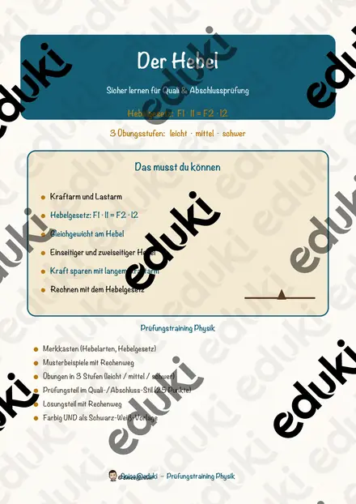
Der Hebel – Prüfungstraining Physik (Klasse 8)

Aktiv und Passiv – Prüfungstraining Deutsch (Klasse 8)

Die Wirtschaftssektoren – Prüfungstraining Erdkunde (Klasse 8)
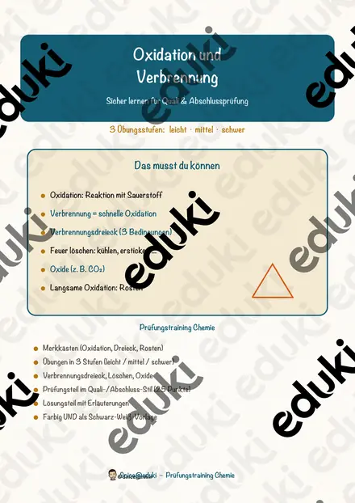
Oxidation und Verbrennung – Prüfungstraining Chemie (Klasse 8)
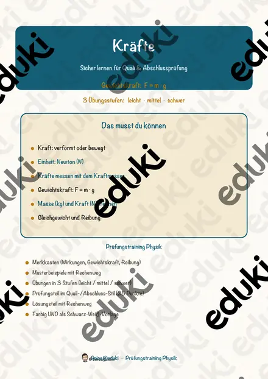
Kräfte – Prüfungstraining Physik (Klasse 8)

Die Kommasetzung – Prüfungstraining Deutsch (Klasse 8)
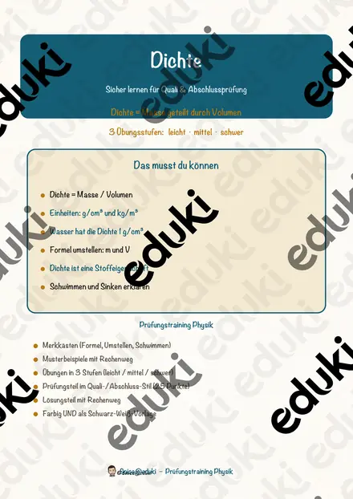
Dichte – Prüfungstraining Physik (Klasse 8)
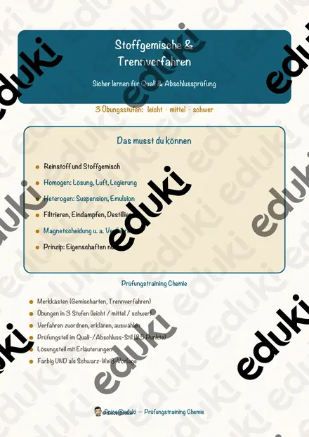
Stoffgemische und Trennverfahren – Prüfungstraining Chemie (Klasse 8)

Vulkane und Erdbeben – Prüfungstraining Erdkunde (Klasse 8)
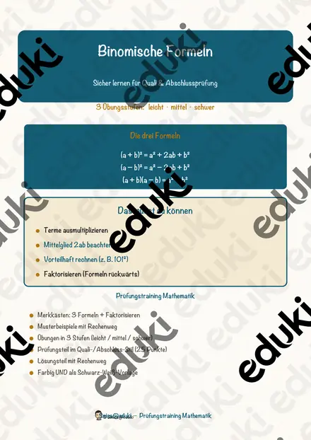
Binomische Formeln – Prüfungstraining Mathematik (Klasse 8)
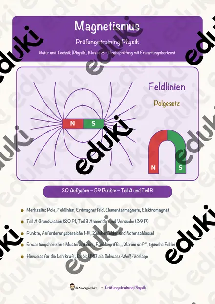
Magnetismus – Prüfungstraining Physik (Klasse 8)
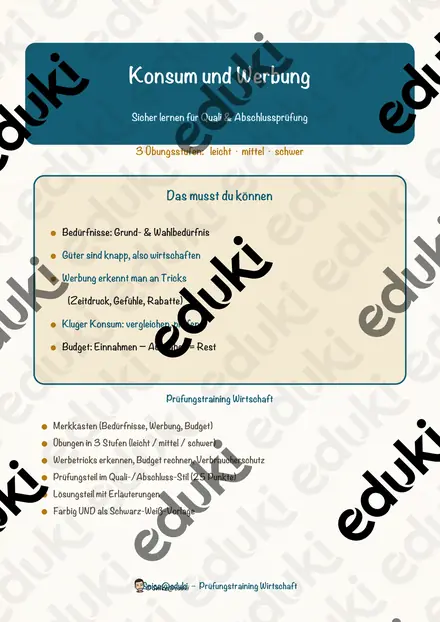
Konsum und Werbung – Prüfungstraining Wirtschaft (Klasse 8)

Das Herz – Prüfungstraining Biologie (Klasse 8)
Die Französische Revolution – Prüfungstraining Geschichte (Klasse 8)

Die Vorgangsbeschreibung – Prüfungstraining Deutsch (Klasse 8)
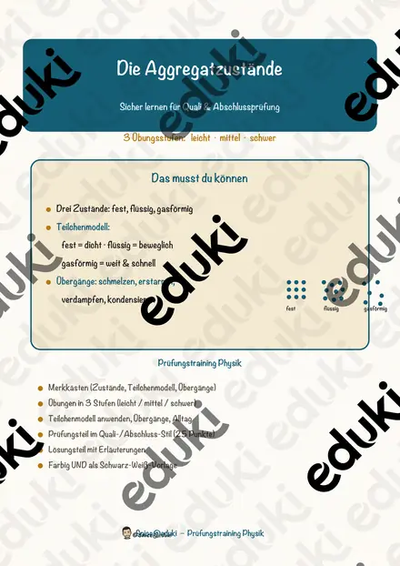
Die Aggregatzustände – Prüfungstraining Physik (Klasse 8)

Der Bericht – Prüfungstraining Deutsch (Klasse 8)
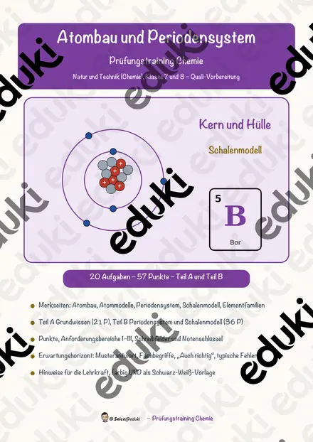
Atombau und Periodensystem – Prüfungstraining Chemie (Klasse 8)

Die Klimazonen der Erde – Prüfungstraining Erdkunde (Klasse 8)

Die Fotosynthese – Prüfungstraining Biologie (Klasse 8)
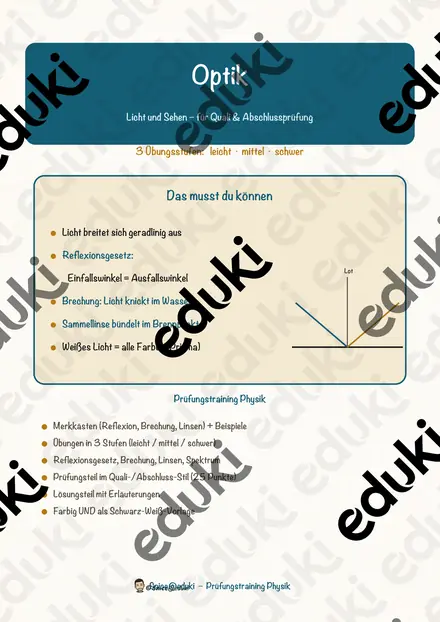
Optik – Licht und Sehen – Prüfungstraining Physik (Klasse 8)

Das Ökosystem – Prüfungstraining Biologie (Klasse 8)
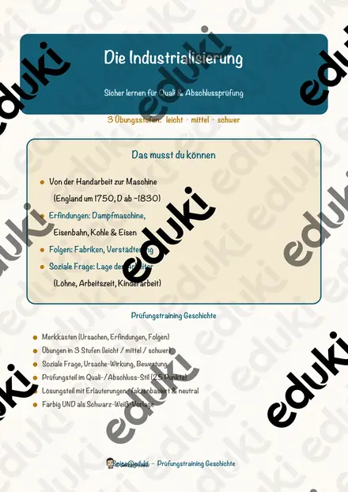
Die Industrialisierung – Prüfungstraining Geschichte (Klasse 8)
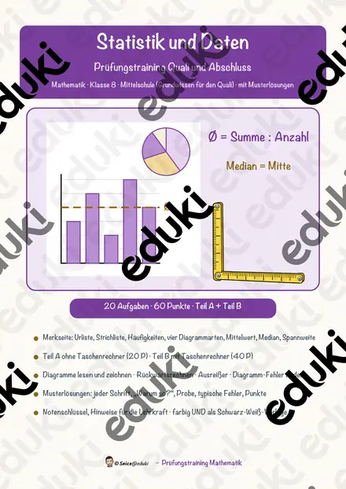
Statistik und Daten – Prüfungstraining Mathematik (Klasse 8)

Die Inhaltsangabe – Prüfungstraining Deutsch (Klasse 8)
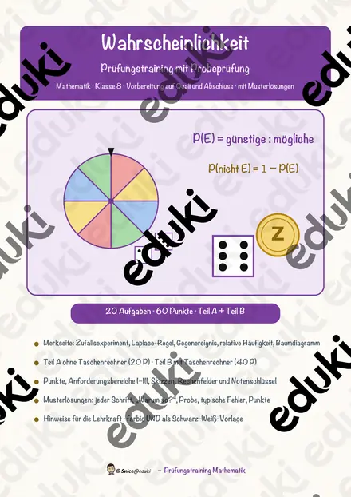
Wahrscheinlichkeit – Prüfungstraining Mathematik (Klasse 8)
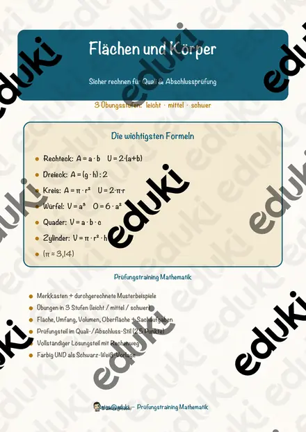
Flächen und Körper – Prüfungstraining Mathematik (Klasse 8)
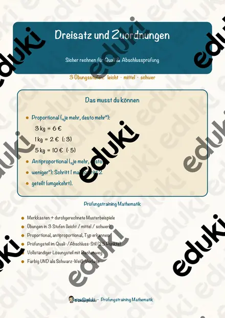
Dreisatz und Zuordnungen – Prüfungstraining Mathematik (Klasse 8)
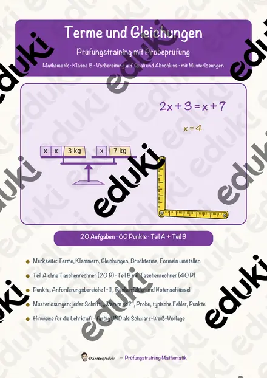
Terme und Gleichungen – Prüfungstraining Mathematik (Klasse 8)
Keine Materialien gefunden – versuch einen anderen Suchbegriff oder Filter.